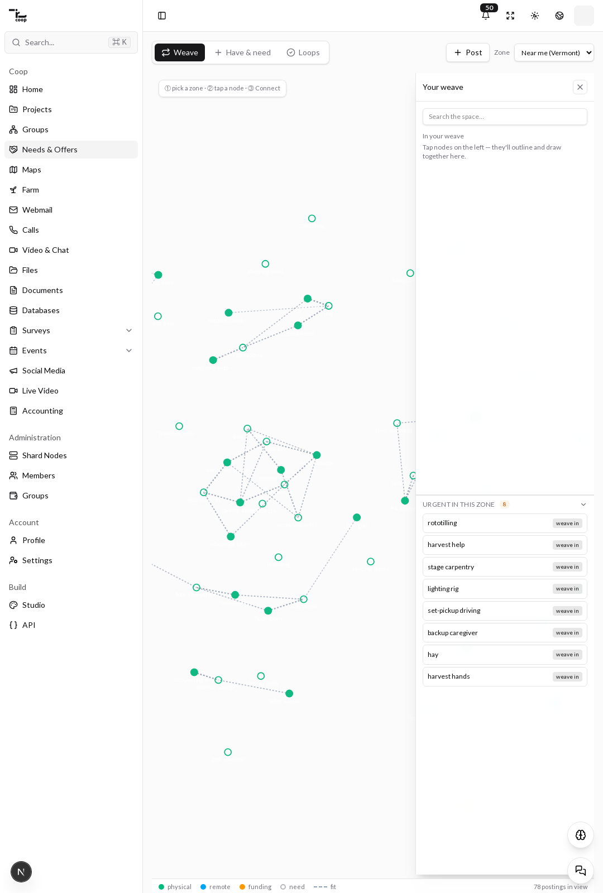
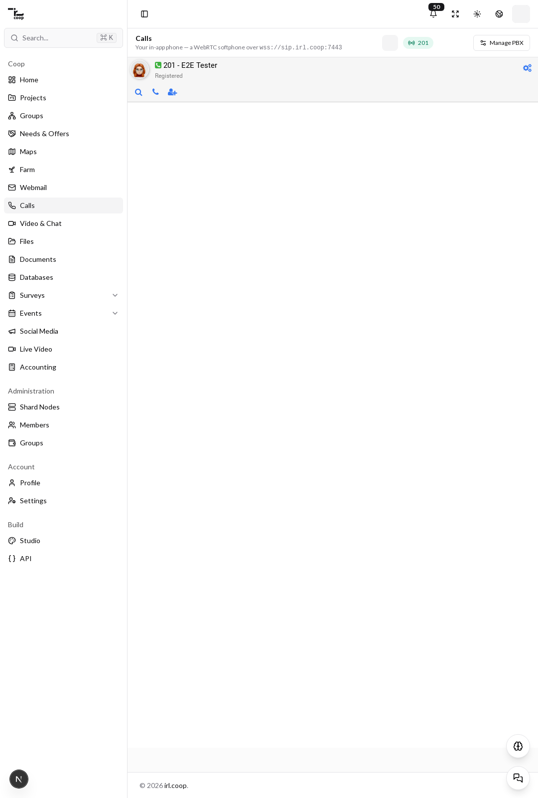
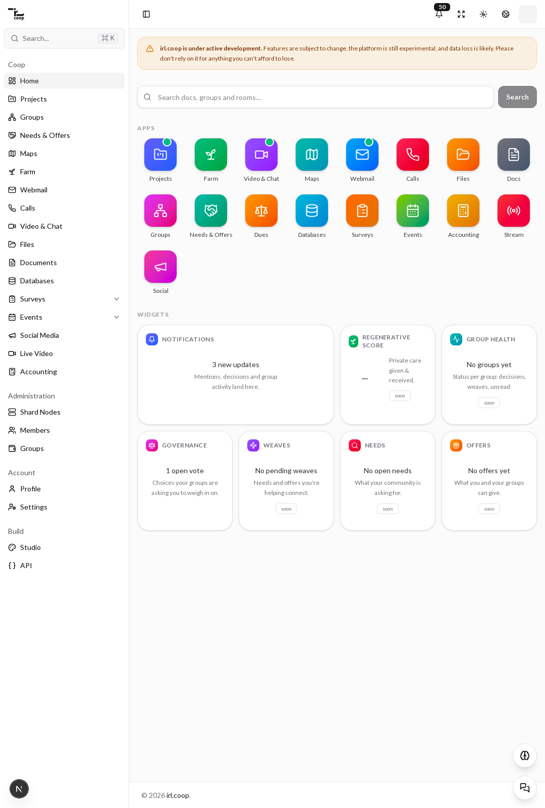
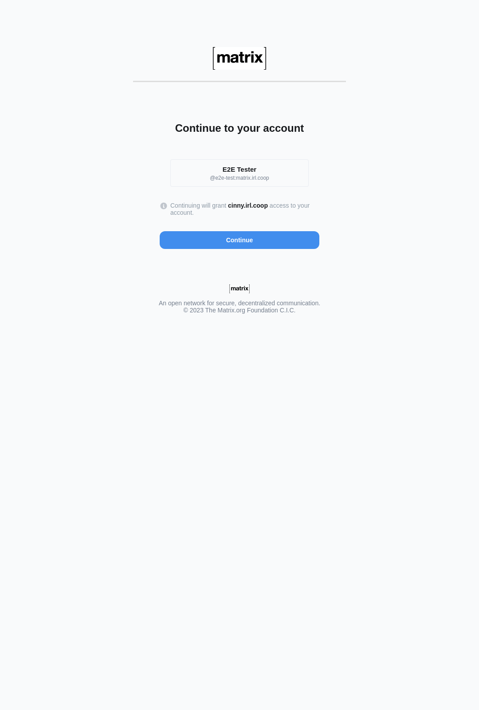
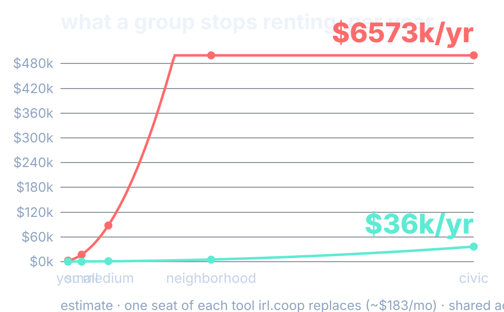

our own stack
irl.coop
we built the whole thing ourselves
identity · edge · mail · data · cache · workflows
start with the door
one identity
everyone logs in through the same realm
one sign-in, for every door
the part nobody really sees
the hard parts
own certs that renew themselves · mail that lands and isn't junk · six tools acting like one
why the good parts hold up
who we spent the time on instead
where the hours went
identity 24.0h (846.5M tokens) · edge 12.0h (333.5M) · workflow 12.0h (156.3M)
hours and tokens we spent — days of work, not a bill
the ones that stayed quiet
cache · data · mail
the work still got done, it just didn't shout
no headlines, same roof
proof, not promise
the app lives
actual screens
for real
running as you watch




what a group stops renting, per year
commercial (per seat)
irl.coop (shared)

what's left before launch
the road to live
money — a non-custodial vault, then the treasury
group ops — the group model, coop as first tenant
calling — the phone rail, a number that's ours
pen-test the isolation before anyone trusts it
booking, calendar, contacts, workflow
the point
irl.coop
built together, stays ours